Slide 1 — Basic Knowledge
สถิติที่คุ้นเคยใช้ข้อมูลที่เก็บครั้งเดียวจากคนหลายคนที่ไม่เกี่ยวกัน วิชานี้ใช้ข้อมูลที่เก็บจากสิ่งเดียวซ้ำไปตามเวลา ค่าวันนี้จึงมักมีร่องรอยของเมื่อวานติดมา บทนี้ปูพื้นที่ทั้งวิชายืนอยู่ และส่วนท้ายบท (หา mean กับ autocovariance ของโมเดลด้วยมือ) คือแนวข้อสอบภาคแรกโดยตรง12 ส่วนภาคที่สองเป็นการวิเคราะห์ข้อมูลจริงด้วย R คะแนนแบ่งเป็นโปรเจกต์ 30% ควิซ 30% (นับ 3 ครั้งที่ดีที่สุด) และ final 40% ไม่มีสอบกลางภาค3
| ตอน | คำถามที่ตอบ | ใช้ต่อที่ |
|---|---|---|
| 1 | อนุกรมเวลาต่างจากข้อมูลทั่วไปตรงไหน | ทุกบท |
| 2 | กราฟหนึ่งเส้นมีอะไรซ้อนกันอยู่ | decomposition (L4), log (L7), SARIMA (L9) |
| 3 | ทำไมแต่ละจุดเวลาเป็นตัวแปรสุ่มคนละตัว | กฎ E, Var, Cov ใช้คำนวณทั้งวิชา |
| 4 | วัดว่าจุดเวลาเกี่ยวกันแค่ไหนอย่างไร | ACF (L3, L5–6), residual (L8) |
| 5 | หา mean และ autocovariance ของโมเดลด้วยมือ | stationarity (L2), MA (L5) |
สีในสมการ: \(\shk{w_t}\) สีฟ้าคือ white noise (shock ที่มองไม่เห็น) · \(\prm{\delta},\prm{\sigma_w^2}\) สีส้มคือพารามิเตอร์
ภาพถ่ายหมู่จะให้ใครยืนตรงไหนก็ได้ข้อมูลเท่าเดิม แต่วิดีโอสลับเฟรมแล้วเรื่องเพี้ยน ข้อมูลทั่วไปคือภาพหมู่ อนุกรมเวลาคือวิดีโอ
วิธีแยกสองแบบที่ง่ายที่สุดคือลองสลับลำดับ45 สไลด์นิยามอนุกรมเวลาว่าเป็นค่าที่เรียงลำดับตามจุดเวลาที่ต่อเนื่องกัน ขณะที่ cross-sectional สังเกต ณ จุดเวลาเดียว (เวลาไม่มีความหมาย)
| cross-sectional | time series | |
|---|---|---|
| เขียน | \(X_i\), i = คนที่ 1, 2, …, n | \(X_t\), t = จุดเวลาที่ 1, 2, …, n |
| สลับ X₁ กับ X₃ | ผลวิเคราะห์ไม่เปลี่ยน (อิสระต่อกัน) | เรื่องราวเปลี่ยน แต่ละแถวขึ้นกับเวลา (DEPENDENCE) |
| รูปตาราง | หลายตัวแปร เช่น รายได้ อายุ ของคน 500 คน | มักตัวแปรเดียว แต่จุดเวลามาก (ปกติอย่างน้อย 50) |
50 จุดเป็นมาตรฐานทั่วไป ไม่ใช่ทฤษฎีบังคับ 30 จุดก็พอได้6 เหตุผลจะชัดใน Lesson 3: เส้นขอบ \(2/\sqrt n\) ของ ACF ที่ n = 50 อยู่ที่ 0.28 แต่ n = 20 ถอยไปถึง 0.45 ข้อมูลน้อยจึงแยกความสัมพันธ์จริงออกจากความบังเอิญได้ยาก
วิชานี้เน้นอนุกรมที่วัดจากตัวแปรสุ่มต่อเนื่องตัวเดียว ที่ช่วงเวลาสม่ำเสมอ ลำดับของข้อมูลโดยทั่วไปหมายถึงเวลา
| ห่างเท่ากัน | ข้อมูลรายวันทำการที่ข้ามเสาร์อาทิตย์ต้องจัดให้ห่างเท่ากันก่อน7 |
| ต่อเนื่อง | วัดเป็นทศนิยมได้ ข้อมูลที่นับเป็นจำนวนเต็มก็ถือเป็น continuous ในวิชานี้เพื่อความง่าย8 |
| ไม่ต่อเนื่อง (เวลา) | เวลานับเป็นจุด ๆ เช่น ปี 1995, 1996 |
ตารางนี้มีตัวแปรเดียวคือ Sales คอลัมน์ Year ไม่ใช่ตัวแปร เป็นแค่ตัวบอกเวลา (time indicator) ค่า 78.7 คือ \(X_1\), 63.5 คือ \(X_2\) ไล่ไปเรื่อย ๆ9 ถ้าย้าย 63.5 ไปไว้ปีสุดท้าย ค่าเฉลี่ยและความแปรปรวนเท่าเดิมทุกประการ แต่เรื่องเปลี่ยนจาก "ตกแล้วฟื้น" เป็น "ทรงตัวแล้วร่วง" และพยากรณ์ปีถัดไปต่างกันมาก ลำดับจึงเป็นข้อมูลในตัวเอง
| ประเภท | ลักษณะ | โมเดล |
|---|---|---|
| univariate | ตัวแปรเดียว คอลัมน์นั้นคือตัวแปรตาม แม้เขียนด้วยตัว X10 | Lesson 2–10 |
| หลายอนุกรมสำคัญเท่ากัน | ส่งผลถึงกัน | VAR (Lesson 11) |
| Y หลัก + อนุกรม X ช่วย | X ช่วยให้พยากรณ์ Y แม่นขึ้น | ARIMAX (Lesson 11) |
| panel data | หลายหน่วยตามเวลา "หัวข้อใหญ่มาก" อาจไม่ได้สอน | — |
panel ของ AIS, True และอีกบริษัทที่เก็บปี 2000–2026 มี 3 observation ที่แต่ละตัวเก็บมา 26 ปี ไม่ใช่ 78 observation1112
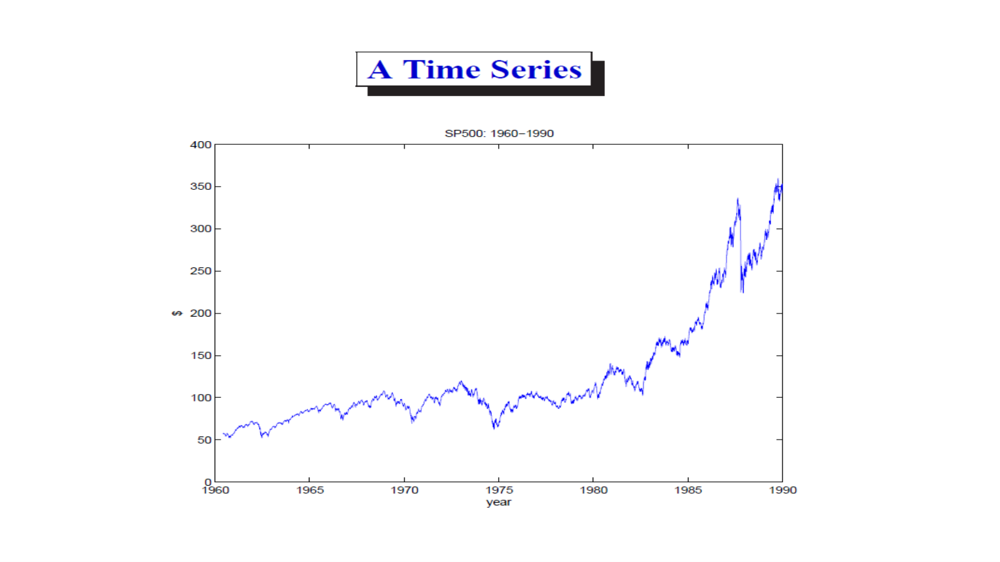
time series plot ใช้ดูภาพรวมก่อน ยังไม่ได้ให้โมเดล13 S&P 500 ช่วงแรกแกว่งโดยไม่ขึ้นชัด หลังปี 1982 ขึ้นเร็ว และช่วงท้ายแกว่งกว้างกว่าช่วงแรกมาก (เช่น การร่วงปี 1987) สามเรื่องนี้คือสิ่งที่ต้องดูในทุกกราฟของวิชา: ระดับกลางเลื่อนไหม มีจังหวะซ้ำไหม ความกว้างของการแกว่งคงที่ไหม และมีจุดผิดปกติ (outlier, step change) ไหม
| เป้าหมาย | ความหมาย |
|---|---|
| บรรยาย | บอกลักษณะของรูปแบบ |
| อธิบาย | อดีตส่งผลต่ออนาคตอย่างไร หรือสองอนุกรม"มีปฏิสัมพันธ์"กันอย่างไร |
| พยากรณ์ | ค่าในอนาคต ระยะสั้น 1–2 จุด หรือระยะยาว |
| ควบคุมคุณภาพ | ถ้าน้ำหนักบรรจุภัณฑ์หลุดจากช่วงที่โมเดลคาด แปลว่าเครื่องเริ่มผิดปกติ |
ธุรกิจส่วนใหญ่พยากรณ์ระยะสั้น เพราะสัปดาห์หน้าก็พอเตรียมสินค้าทัน14 ตอน 5 จะเห็นเหตุผลทางคณิต: ยิ่งพยากรณ์ไกล ความแปรปรวนยิ่งโต (Lesson 8 คำนวณช่วงพยากรณ์จากเรื่องนี้)
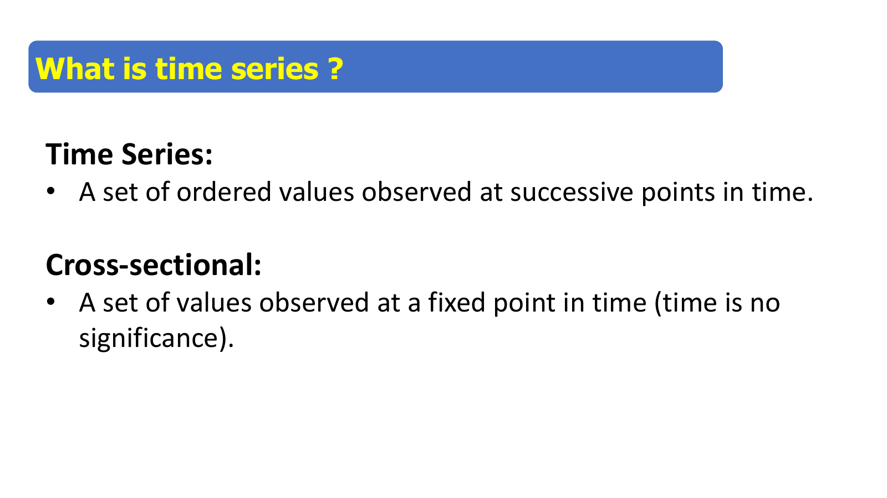
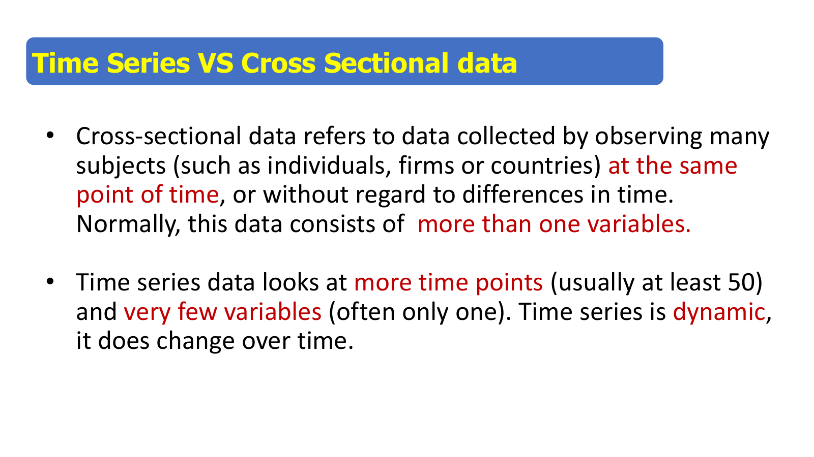
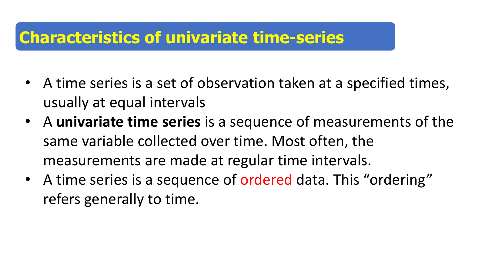

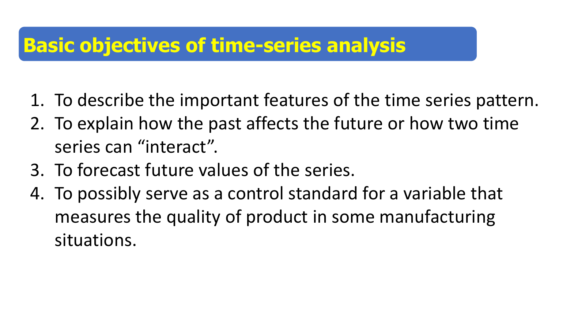
ฟังวิทยุที่สัญญาณไม่ชัด เพลงคือ signal ที่ทายท่อนต่อไปได้ เสียงซ่าคือ noise ที่ทายไม่ได้ บอกได้แค่ว่าดังประมาณไหน งานของทั้งวิชาคือแยกสองอย่างนี้ออกจากกัน15
| องค์ประกอบ | กลุ่ม | ร้านค้าตัวอย่าง | จุดสังเกต |
|---|---|---|---|
| trend | signal | ยอดโตขึ้นทุกปี | ดูภาพรวม เริ่มจากเส้นตรง ข้อมูลยาวอาจมีหลาย trend16 |
| seasonal | signal | สูงทุกธันวาคม | รอบซ้ำที่ผูกกับปฏิทิน |
| cycle | signal | ซบเซาหลายปีตามเศรษฐกิจ | คาบของ cycle ยาวกว่าหนึ่งปี |
| irregular | noise | ขึ้นลงรายวันโดยไม่มีเหตุผล | ส่วนที่เหลือหลังเอาสามอย่างแรกออก บางครั้งเรียก"noise" |
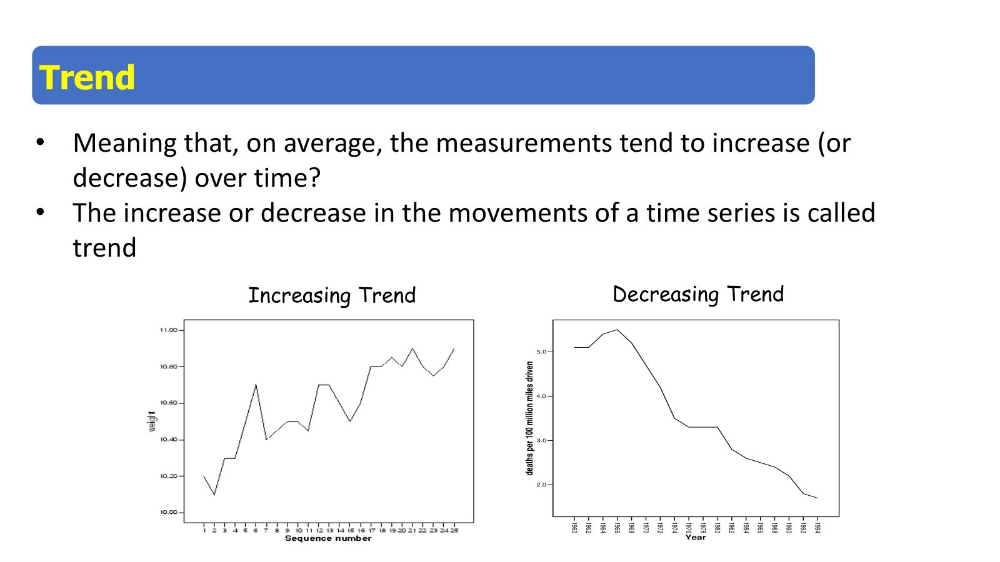
trend คือระดับเฉลี่ยที่เพิ่มหรือลดตามเวลา ดูภาพรวม ไม่ใช่ทีละจุด กราฟบนมีช่วงลดลงสั้น ๆ แต่ปลายทางยังสูงกว่าต้นทาง กราฟล่างคือผู้เสียชีวิตต่อการขับรถ 100 ล้านไมล์ที่ลดลงต่อเนื่อง เหมือนเดินขึ้นเขาที่มีทางลงสั้น ๆ เป็นช่วง

ยอดของทุกรอบตรงกับฤดูร้อน จึงทายตำแหน่งยอดล่วงหน้าได้ และยอดแต่ละรอบสูงกว่ารอบก่อน แปลว่ามี trend ซ้อนอยู่ด้วย องค์ประกอบหลายอย่างอยู่ในเส้นเดียวกันได้ การใช้ไฟฟ้าก็เป็นรอบแบบนี้ หน้าร้อนคนเปิดแอร์มาก17 ข้อมูลนี้กลับมาใน Lesson 7

ยอดขายแบตเตอรี่วนรอบเส้น trend เป็นสี่ระยะ คือรุ่งเรือง ถดถอย ตกต่ำ และฟื้นตัว หนึ่งรอบใช้หลายปีและไม่ได้เกิดเดือนเดิมทุกปี seasonal มองเป็นจุดที่ซ้ำ ส่วน cycle มองเป็นลอนที่ไกลกว่า18 cycle ยากที่สุด เพราะเปลี่ยนง่ายและต้องใช้ sin/cos ส่วนใหญ่จึงไม่ model โดยตรง วิชานี้เน้น time domain มากกว่า frequency domain19

ทั้งสี่ซ้อนกันอยู่ และแยกได้ด้วยความยาวของรอบ: trend ยาวตลอดช่วง cycle เป็นลอนยาว seasonal เป็นรอบสั้นซ้ำถี่ ส่วน irregular คือรอยหยักไม่มีแบบแผน เกิดจากเหตุไม่คาดคิด เช่น น้ำท่วม สงคราม แผ่นดินไหว โรคระบาด ทุพภิกขภัย ช่วง Covid-19 ทำโมเดลอย่างไรก็ยังมีส่วนนี้โผล่มา20 error ของอนุกรมเวลามีชื่อเฉพาะว่า white noise ซึ่งเป็นพระเอกของตอน 421

จำนวนผู้ยกเลิกนัดใน 30 วันแกว่งแรง (สองวันติดกันต่างกันถึง 11) แต่ระดับกลางไม่ขึ้นไม่ลง ไม่มียอดซ้ำทุก 7 วัน ไม่มีลอนยาว และความกว้างพอ ๆ กันตลอด เมื่อหา trend, seasonal และ cycle ไม่เจอ สิ่งที่เห็นจึงเป็น irregular ล้วน ๆ
ช่วยจดคำว่า constant และ non-constant variance22 การแยก trend มีหลายเทคนิค แต่การทำให้การแกว่งคงที่เป็นเงื่อนไขของเกือบทุกโมเดล23

| กราฟ | mean (ระดับกลาง) | variance (ความกว้างของการแกว่ง) |
|---|---|---|
| ผู้โดยสารสายการบิน | ไม่คงที่ (เพิ่มขึ้น) | ไม่คงที่ (กว้างขึ้นตามระดับ) |
| 100 จุดที่แกว่งรอบ 0 | คงที่ | ไม่คงที่ (ช่วงแรกแคบ ช่วงท้ายกว้าง) |
ใน regression ความแปรปรวนคงที่คือ homoscedasticity ไม่คงที่คือ heteroscedasticity ถ้า residual ช่วงหลังแกว่งมากกว่า แปลว่าโมเดลอธิบายช่วงหลังได้แย่ ซึ่งเป็นสัญญาณของ lack of fit24 ความแปรปรวนของอนุกรมเวลามีอีกชื่อว่า volatility25 วิธีแก้ที่ใช้บ่อยที่สุดคือ log ซึ่งสอนเต็มใน Lesson 7 ตอน 2
ปีแรกยอดอยู่ระหว่าง 90 ถึง 110 ปีที่สิบอยู่ระหว่าง 360 ถึง 440 ทั้งสองปีแกว่ง ±10% รอบระดับของตัวเอง
ปีแรก 20 ปีที่สิบ 80 ต่างกัน 4 เท่า variance จึงไม่คงที่
ปีแรก \(\ln110-\ln90=0.2007\) ปีที่สิบ \(\ln440-\ln360=0.2007\) เท่ากันพอดี
แยก signal ไว้พยากรณ์ การพยากรณ์ยืดส่วน signal ของโมเดลออกไป (trend / seasonal / cycle) ส่วน noise ทายไม่ได้ แต่ขนาดของมันใช้สร้าง ช่วงความเชื่อมั่นที่รองรับความไม่แน่นอน (error / ส่วนที่เหลือ) เพราะไม่มีโมเดลไหนถูกสมบูรณ์ noise จึงมีอยู่เสมอ26
| trend ปีแรก 100, ปีที่สิบ 400 | แบบบวก S = +20 | แบบคูณ S = 1.2 |
|---|---|---|
| หน้าร้อนปีแรก | 120 (+20) | 120 (+20) |
| หน้าร้อนปีที่สิบ | 420 (+20) | 480 (+80) |
| เหมาะกับ | การแกว่งคงที่ | การแกว่งโตตามระดับ |
ถ้าอนุกรมไม่ได้แกว่งมากขึ้นตามเวลา แบบบวกเหมาะกว่า27 วิธีคำนวณ seasonal index ทีละขั้นอยู่ใน Lesson 4

ข้อมูลผู้โดยสารสายการบินเป็นข้อมูลคลาสสิกเพราะมีทุกแพทเทิร์น28 สไลด์สรุปว่า เห็น seasonal variation (คล้ายรูปแบบวนรอบ) และ ทั้งค่าเฉลี่ยโดยรวมและการแกว่งดูเพิ่มขึ้นตามเวลา เพราะ คนไปเที่ยวหน้าร้อนมากกว่าช่วงอื่นมาก ความกว้างของยอดในปีแรกกับปีสุดท้ายต่างกันราว 5 เท่า จึงเหมาะกับแบบคูณ แยกด้วย R ได้ดัชนีกรกฎาคม 1.227 คือสูงกว่า trend 22.7%
d <- decompose(AirPassengers, type = "multiplicative")
round(d$figure, 3)
plot(d)[1] 0.910 0.884 1.007 0.976 0.981 1.113 1.227 1.220 1.060 0.922 0.801 0.899
AirPassengers มีใน R อยู่แล้ว d$figure คือ seasonal index ของเดือนมกราคมถึงธันวาคม ถ้าแยกแบบบวก กรกฎาคมจะได้ +63.83 คนต่อเดือนทุกปี ซึ่งเกินจริงในปีแรกและต่ำกว่าจริงในปีท้าย

สไลด์ถามว่า เห็นรูปแบบอะไรบ้าง ผลผลิตนมมี trend ขาขึ้น ยอดและท้องอยู่ตำแหน่งเดิมทุกปี (seasonal) และความกว้างแต่ละปีใกล้เคียงกัน แบบบวกจึงเหมาะกว่า ข้อมูลนี้กลับมาใน Lesson 9 (SARIMA ที่ต้องใช้ทั้ง d และ D)

คำถามเดียวกันกับอุณหภูมิโลกให้คำตอบต่างออกไป มี trend ขาขึ้นที่ไม่เป็นเส้นตรง (ราบ ขึ้น ราบ ขึ้น) แต่ไม่มี seasonal เพราะเป็นข้อมูลรายปี seasonal ต้องวัดหลายครั้งในปี ข้อมูลนี้คือ temp.txt ที่ใช้ใน Lesson 2, 3 และ 8

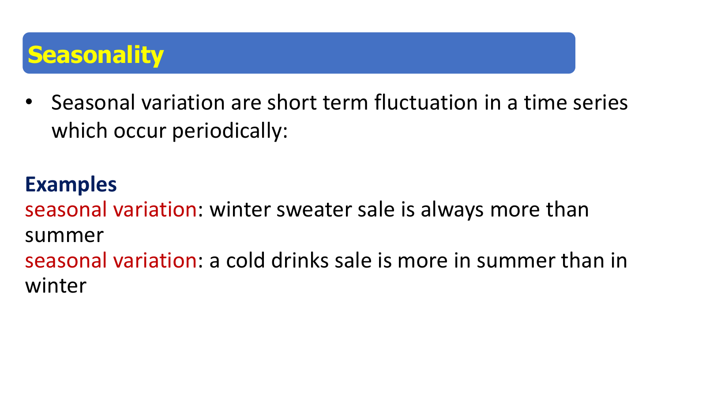


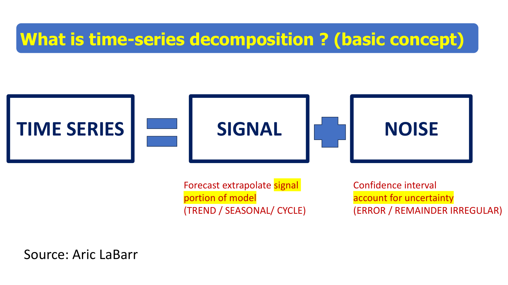

ช่วงแรกของวิชาเป็นการปูพื้นที่ต้องใช้สถิติ29 เพราะความยากของอนุกรมเวลาคือแต่ละจุดเป็นตัวแปรสุ่ม และจุดเหล่านั้นสัมพันธ์กัน30 ตัวแปรสุ่มมีค่าที่ทายแน่นอนไม่ได้ แต่แปรผันตามการแจกแจงความน่าจะเป็น ในวิชานี้ "การทดลองสุ่ม" ก็คือการเก็บข้อมูล31 และ distribution คือนิสัยของตัวแปรสุ่มว่าเคลื่อนที่อย่างไร32
สองตัวเลขหลักที่บรรยายตัวแปรสุ่มคือค่าคาดหมายและความแปรปรวน ในชีวิตจริงไม่รู้ \(f(x)\) จึงประมาณด้วย \(\bar x=\sum x_i/n\) และ \(s^2=\sum(x_i-\bar x)^2/(n-1)\)
ลูกเต๋าหนึ่งลูก: \(E(X)=21/6=3.5\) และ \(E(X^2)=91/6=15.167\) จึงได้ \(\mathrm{Var}(X)=15.167-12.25=2.917\)
| สัญลักษณ์ | คือ | ตัวอย่าง |
|---|---|---|
| ตัวกรีก | parameter ค่าจริงที่ไม่รู้ | \(\mu\), \(\rho(h)\), \(\phi\) |
| ตัวอังกฤษ หรือตัวสวมหมวก | statistic ค่าที่คำนวณจากข้อมูล | \(\bar x\), \(\hat\rho(h)\), \(\hat\phi\) |
หลักนี้ใช้ตลอดวิชา33 เช่น estimation ใน Lesson 7 คือการ "เติม hat" ให้พารามิเตอร์
เครื่องมือสำหรับสองตัวแปรคือcovariance และ correlation covariance บอกทิศทาง (บวกไปทางเดียวกัน ลบสวนทาง) แต่บอกความแรงไม่ได้ เพราะขนาดขึ้นกับหน่วย34 correlation คือ covariance ที่หารด้วย SD ทั้งสองตัว จึงไม่มีหน่วย
คะแนนคณิต 2, 4, 6 กับวิทย์ 1, 3, 5: ห่างจากค่าเฉลี่ย −2, 0, +2 ทั้งสองวิชา คูณกันได้ 4, 0, 4 เฉลี่ยได้ cov = 8/3 เป็นบวกเพราะลบคูณลบได้บวก (คนที่คณิตต่ำ วิทย์ก็ต่ำ)
| covariance | correlation | |
|---|---|---|
| ช่วงค่า | −∞ ถึง ∞35 | −1 ถึง 1 |
| หน่วย | มี | ไม่มี ("standardized version ของ covariance") |
| แปลงหากัน | cov → corr ได้ แต่ corr → cov ไม่ได้ถ้าไม่รู้ SD36 | |
ถ้า X กับ Y อิสระต่อกัน cov = 0 (เคยออกข้อสอบ37) แต่(ส่วนกลับไม่จำเป็นต้องจริง) ตัวอย่างค้าน: X = −1, 0, 1 โอกาสเท่ากัน และ Y = X² ได้ \(E(XY)=E(X^3)=0\) และ \(E(X)=0\) cov จึงเป็น 0 ทั้งที่ Y ถูกกำหนดจาก X ทั้งหมด เพราะ covariance วัดเฉพาะความสัมพันธ์เชิงเส้น
| กฎ | จำว่า |
|---|---|
| \(E(aX+bY)=aE(X)+bE(Y)\) | ดึงค่าคงที่ออกตรง ๆ |
| \(\mathrm{Var}(aX)=a^2\mathrm{Var}(X)\) | ค่าคงที่ที่ดึงออกต้องยกกำลังสอง |
| \(\mathrm{Var}(X+Y)=\mathrm{Var}(X)+\mathrm{Var}(Y)+2\mathrm{Cov}(X,Y)\) | อิสระกันเหลือแค่สองพจน์แรก |
| \(\mathrm{Cov}(X,a)=0\) | ค่าคงที่ไม่แกว่ง จึงไม่แปรร่วมกับอะไร |
| \(\mathrm{Cov}(aX,bY)=ab\,\mathrm{Cov}(X,Y)\) | ดึงสัมประสิทธิ์ทั้งสองข้าง |
| \(\mathrm{Cov}(X,X)=\mathrm{Var}(X)\) | ตัวเองกับตัวเองคือความแปรปรวน |
หัวใจคือดึงสัมประสิทธิ์ออก แล้วคูณกระจายทีละคู่โดยพาเครื่องหมายไปด้วย38 สไลด์หน้า 29 ให้โจทย์ฝึกหกข้อโดยไม่มีเฉลย
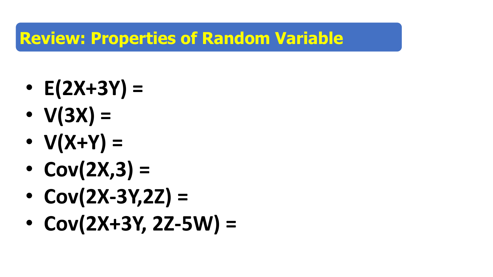
\(2E(X)+3E(Y)\)
\(9V(X)\) ไม่ใช่ \(3V(X)\)
\(V(X)+V(Y)+2\mathrm{Cov}(X,Y)\)
3 เป็นค่าคงที่ ได้ \(0\)
\(4\mathrm{Cov}(X,Z)-6\mathrm{Cov}(Y,Z)\)
สองตัวคูณสองตัวได้ 4 คู่: \(4\mathrm{Cov}(X,Z)-10\mathrm{Cov}(X,W)+6\mathrm{Cov}(Y,Z)-15\mathrm{Cov}(Y,W)\)
\(2\sigma_{XZ}+4\sigma_{XW}-\sigma_{YZ}-2\sigma_{YW}\)39
นึกถึงลูกเต๋า n ลูกเรียงกันลูกละหนึ่งเวลา แต่ละลูกอาจถ่วงน้ำหนักไม่เหมือนกัน ข้อมูลที่เห็นคือแต้มชุดเดียว เพราะเวลาย้อนไปทอยใหม่ไม่ได้ ความยากของวิชาคือเรียนรู้ลูกเต๋าทั้ง n ลูกจากการทอยครั้งเดียว
ลำดับตัวแปรสุ่ม \(\{X_t\}\) เรียกว่า stochastic process ในสถิติทั่วไป \(x_1,\dots,x_n\) มาจากตัวแปรสุ่มตัวเดียวกัน แต่ในอนุกรมเวลามีตัวแปรสุ่มถึง n ตัว40 และข้อมูลแทบทุกชุดสัมพันธ์กับตัวเอง จึงต้องใช้ประโยชน์จากความสัมพันธ์นั้นพยากรณ์ หรืออย่างน้อยรับมือ เพราะวิธีที่สมมติว่าข้อมูลอิสระจะให้ผลผิด (เช่น s.e. ของ OLS ใน Lesson 11)

จุดเริ่ม \(V_0\) รู้แน่นอน แต่แต่ละเวลาถัดไปเป็นก้อนการแจกแจงหนึ่งก้อน ศูนย์กลางเลื่อนตาม trend และ ความแปรปรวนโตเป็นเส้นตรงตามระยะที่พยากรณ์ นี่คือ random walk ที่ตอน 5.2 จะพิสูจน์ว่า Var = tσ²
การบรรยายให้ครบต้องรู้การแจกแจงร่วมของทุกจุด ซึ่งมากเกินจะหาจากข้อมูลชุดเดียว ทางออกคือระบุเฉพาะ moment อันดับหนึ่งและสอง คือ \(E(X_t)\) และ \(E(X_tX_{t-k})\) เพราะข้อมูลสำคัญส่วนใหญ่อยู่ในmoment อันดับหนึ่งและสอง เหมือนบรรยายคนด้วยส่วนสูงกับน้ำหนัก ไม่ครบทุกรายละเอียดแต่พอแยกคนส่วนใหญ่ได้
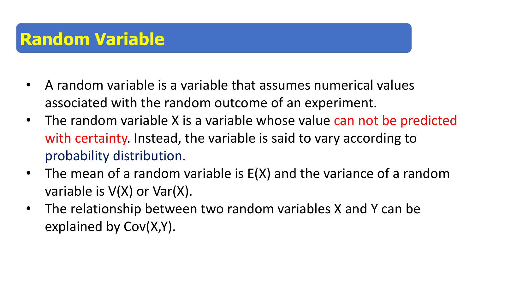
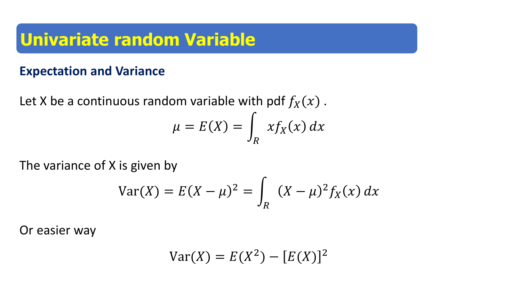
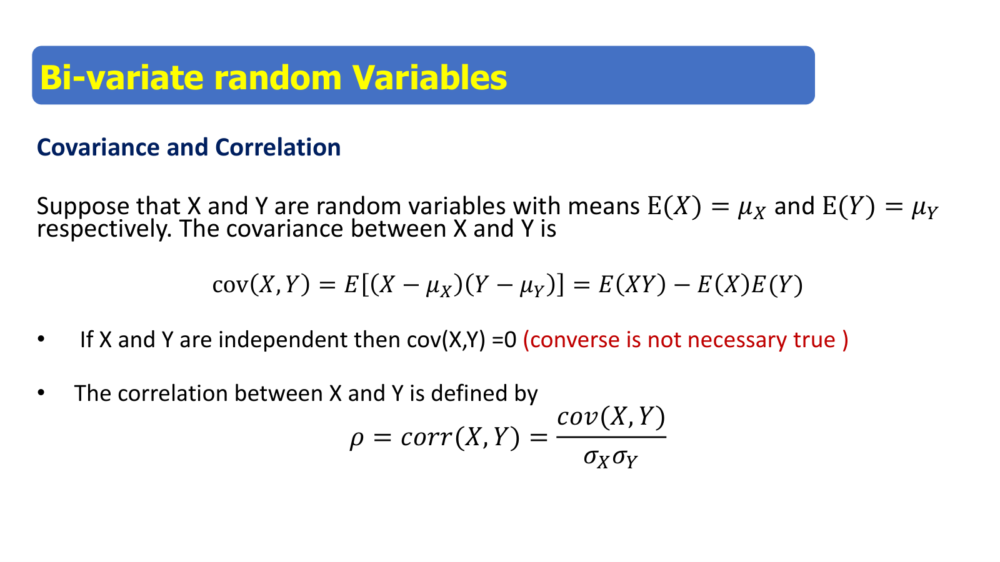
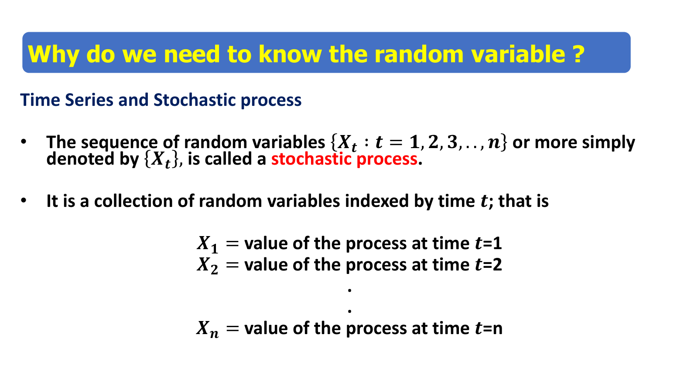
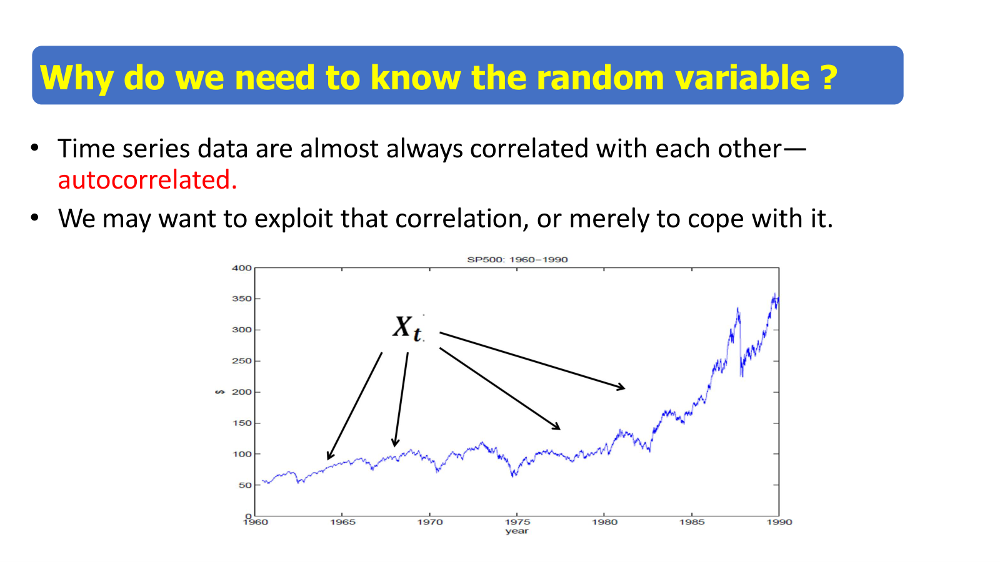
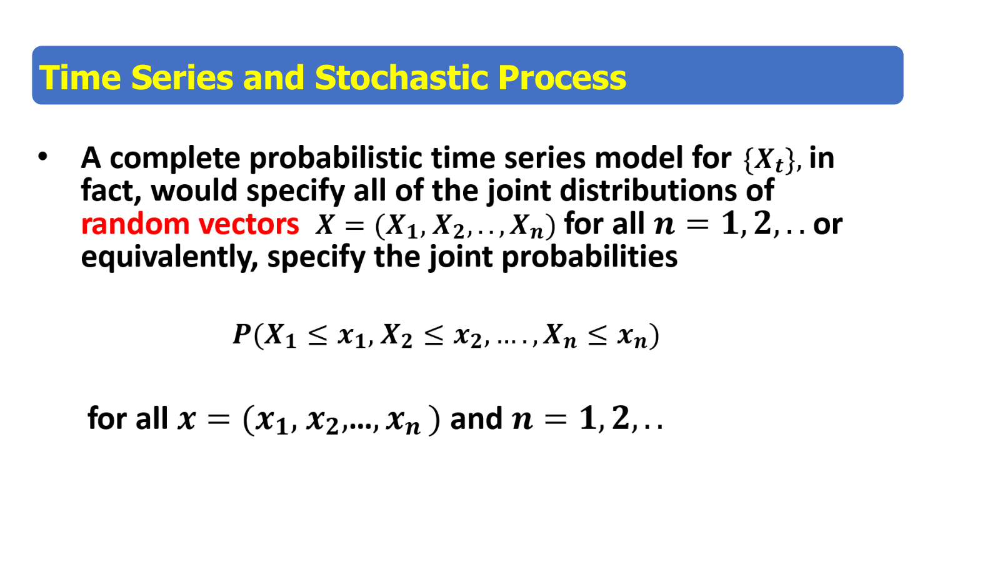

auto แปลว่าตัวเอง cross-sectional ใช้ covariance เทียบสองตัวแปร แต่อนุกรมเวลามีตัวแปรเดียว จึงเทียบตัวเองที่เวลาต่างกัน41 \(\mu_t\) มีตัวห้อย t เพราะแต่ละเวลาอาจมีค่าเฉลี่ยต่างกัน (มี trend ก็ต่างกัน) ซึ่งคือเกณฑ์แรกของ stationarity ใน Lesson 2
\(\gamma(1,5)\) คือความสัมพันธ์ระหว่างมกราคมกับพฤษภาคม42 และ \(\gamma(t,t)=\mathrm{Var}(X_t)\) วิธีเขียนที่ง่ายกว่าคือสนใจแค่ระยะห่าง43 เขียนคู่ \(X_t\) กับ \(X_{t+h}\) และเรียก h ว่า lag โดย \(\gamma(0)=\mathrm{Var}(X_t)\) lag h หมายถึงทุกคู่ที่ห่างกัน h ไม่ใช่ระยะจากวันแรก
สูตรแรกในหนังสือที่ต้องจด ใช้ได้ทุกอนุกรมเวลา44 มาจาก \(\rho(s,t)=\gamma(s,t)/\sqrt{\gamma(s,s)\gamma(t,t)}\) เมื่อความแปรปรวนเท่ากันทุกเวลา ค่าใกล้ ±1 บอกความสัมพันธ์เชิงเส้นที่แรง และ \(\rho(0)=1\) เสมอเพราะเป็นตัวแปรเดียวกัน45
\(X_t=5+w_t\) เมื่อ \(w_t\) อิสระ ค่าเฉลี่ย 0 ความแปรปรวน 4: mean = 5 ทุกเวลา \(\gamma(0)=4\) (บวกค่าคงที่ไม่เปลี่ยนการแกว่ง) และ \(\gamma(h)=0\) เมื่อ h ≠ 0 ACF จึงเป็น 1 ที่ lag 0 และ 0 ที่ lag อื่น
white noise คือลูกเต๋าลูกใหม่ที่ทอยทุกวัน ไม่รู้เรื่องเมื่อวานเลย เหมือนเสียงซ่าจากวิทยุในหนัง White Noise ที่แกว่งแบบสุ่ม46 มันคืออนุกรมเวลาตัวแรกที่ต้องรู้ เพราะไม่มีแบบแผนอะไรเลย47
| ระดับ | เงื่อนไข | เขียน |
|---|---|---|
| white noise | ไม่สัมพันธ์กัน mean 0 ความแปรปรวน \(\sigma_w^2\) | \(w_t\sim wn(0,\sigma_w^2)\) |
| iid (เข้มกว่า) | อิสระและมีการแจกแจงเดียวกัน \(\sigma_w^2\) (ไม่ขึ้นกับ t)48 | independent ห้ามทุกรูปแบบ uncorrelated ห้ามแค่เชิงเส้น |
| Gaussian | iid และเป็น normal ตำราใช้เพราะง่าย49 | \(w_t\sim iid\ N(0,\sigma_w^2)\) แต่ \(iid\ t_3\) ก็เป็น white noise ได้ |
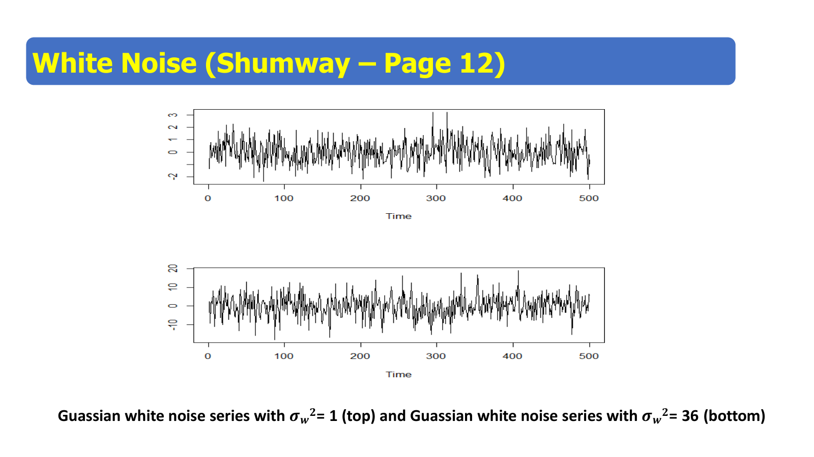
สองชุดรูปแบบเหมือนกัน ต่างแค่สเกล ใช้กฎ 68–95–99.7 ของ normal50: SD 1 ค่าส่วนใหญ่อยู่ใน ±2 ส่วน SD 6 อยู่ใน ±12 ความแปรปรวนเปลี่ยนแค่ความกว้าง ไม่ได้สร้างแบบแผนใหม่
กฎนี้ใช้ในทุกการพิสูจน์ของวิชา แม้อยู่ในฟังก์ชันที่ต่างกันก็ตาม51 กรณี i = j มาจากคณิตศาสตร์ (cov กับตัวเองคือ Var) ส่วน i ≠ j มาจากนิยาม ผลคือ ACF ของ white noise เป็น 1 ที่ lag 0 และ 0 ที่อื่น ไม่ขึ้นกับ t จึงเป็นตัวอย่างแรกของอนุกรมที่ stationary ตัว white noise เองไม่ออกข้อสอบเพราะง่ายที่สุด52 แต่ทุกข้อสอบใช้กฎนี้
white noise โดยตัวเองไม่น่าสนใจสำหรับสร้างโมเดล แต่ทุกโมเดลสร้างจากมัน: MA คือผลรวมของ white noise (Lesson 5), AR คืออดีตบวก white noise และเมื่อสร้างโมเดลเสร็จ สิ่งที่เหลือควรเป็น white noise53 นี่คือเกณฑ์ตรวจโมเดลใน Lesson 8 ถ้า residual ยังมีแบบแผน แปลว่าโมเดลยังดึงไม่หมด
set.seed(1)
w <- rnorm(100) # 100 ค่าจาก N(0, 1)
plot(ts(w)) # ต้องแปลงเป็น ts ก่อน
acf(w) # correlogram พร้อมเส้นขอบ ±2/√n = ±0.2mean = 0.109 sd = 0.898 อยู่ใน ±1: 74% อยู่ใน ±2: 97% ACF lag 1–5: -0.004 -0.027 -0.107 -0.113 -0.093 (ไม่มี lag ใดเกิน ±0.2 ใน 10 lag แรก)
ts(w) บอก R ว่าเป็นอนุกรมเวลา ถ้าไม่บอก R จะถือเป็นข้อมูล cross-sectional54 ACF ทุก lag อยู่ในเส้นขอบ รันอีกครั้งก็ไม่ทะลุ เพราะเป็นคุณสมบัติของ white noise55
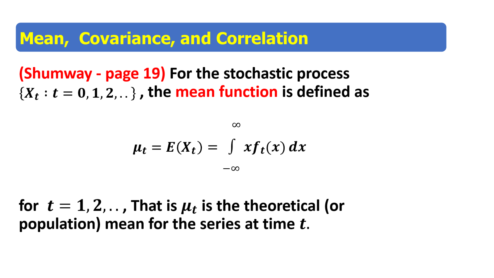

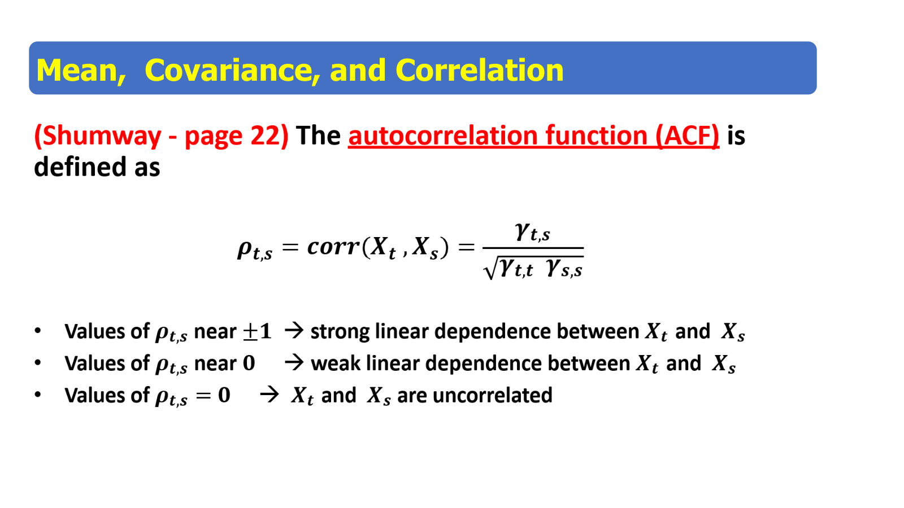
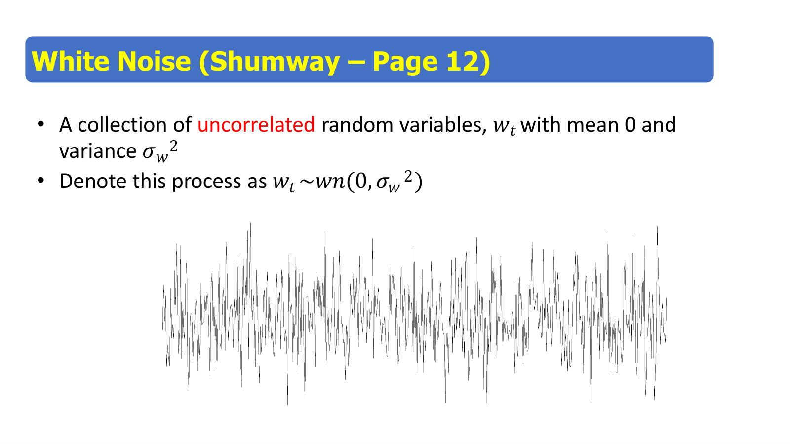

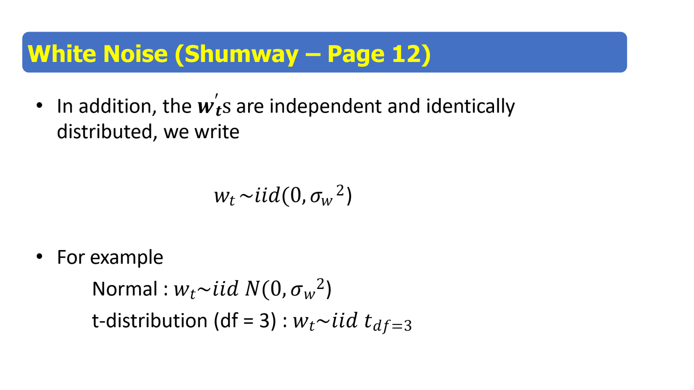
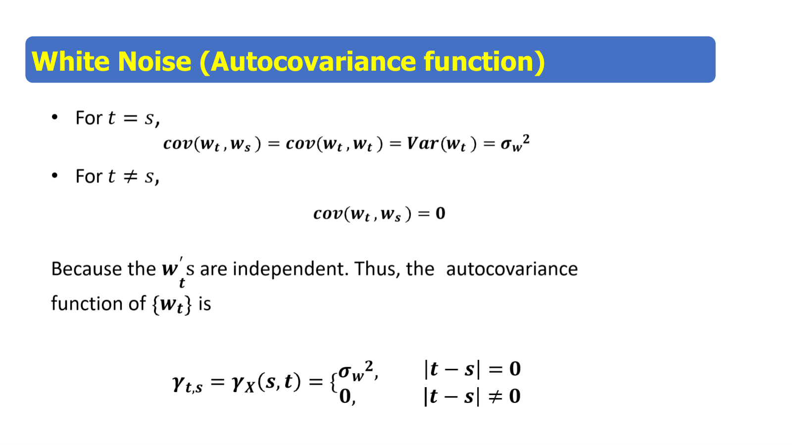
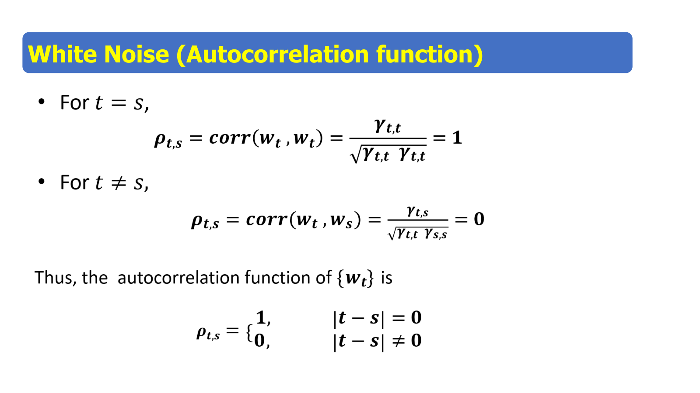

ร้านไอศกรีม: \(w_t\) คือโชคของวันนี้ว่าบังเอิญมีคนเดินผ่านมากหรือน้อย (มองไม่เห็น) \(X_t\) คือยอดขายที่จดลงสมุด สมการของโมเดลบอกว่ายอดวันนี้ผสมโชคของวันไหนบ้าง ด้วยน้ำหนักเท่าใด
ให้มองแต่ละ \(X_t\) เป็นถุงที่ใส่ลูกบอลติดเบอร์ w แต่ละลูกมีน้ำหนักเท่าสัมประสิทธิ์ covariance ของสองถุงคือหาลูกเบอร์เดียวกันที่อยู่ทั้งสองถุง คูณน้ำหนักสองข้าง คูณ \(\sigma_w^2\) แล้วบวกทุกคู่ ลูกที่ไม่มีคู่ได้ 0 ตามกฎของ white noise
อย่าเดาแบบแผน ต้องคูณกระจายจริงทุก lag ใน \(x_t=w_{t-1}+2w_t+w_{t+1}\) เห็น \(\gamma(0)=6\sigma^2\) กับ \(\gamma(1)=4\sigma^2\) แล้วคนมักเดาว่า \(\gamma(2)=2\sigma^2\) แต่ค่าจริงคือ \(\sigma^2\)56 เฉลยเต็มอยู่ใน Lesson 2

Example 1.9 ให้หา mean, autocovariance และ ACF ของ \(X_t=\tfrac13(w_{t-1}+w_t+w_{t+1})\) ซึ่งเฉลี่ย white noise สามค่าติดกัน เป็นตัวอย่างแรกของการประกอบ white noise ให้มีความสัมพันธ์ระหว่างจุด และเป็นโจทย์แนวที่ออกสอบ57
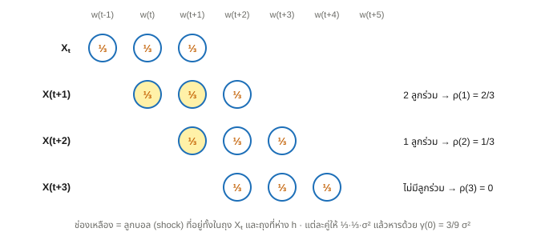
แต่ละแถวคือถุงหนึ่งใบ ช่องเหลืองคือลูกที่อยู่ในถุง \(X_t\) ด้วย ยิ่งห่างกันมาก ลูกร่วมยิ่งน้อย จาก 3 เหลือ 2, 1 และ 0 ภาพแบบนี้จะกลับมาใน Lesson 5 ในชื่อ MA(q)
\(E(X_t)=\tfrac13(0+0+0)=0\) ทุกเวลา
ทุกลูกมีน้ำหนัก \(\tfrac13\) ลูกที่ตรงกันแต่ละลูกให้ \(\tfrac13\cdot\tfrac13\sigma_w^2=\tfrac19\sigma_w^2\)
ตรงกัน 3, 2, 1 ลูก: \(\gamma(0)=\tfrac39\sigma_w^2\), \(\gamma(1)=\tfrac29\sigma_w^2\), \(\gamma(2)=\tfrac19\sigma_w^2\)
ไม่มีลูกตรงกัน: \(\gamma(h)=0\) ค่า h ติดลบให้ผลเท่ากับค่าบวก
หารด้วย \(\gamma(0)\): \(\rho(1)=\tfrac23\), \(\rho(2)=\tfrac13\), \(\rho(h)=0\) เมื่อ \(|h|\ge3\)
set.seed(2)
w <- rnorm(1002)
x <- na.omit(stats::filter(w, rep(1/3, 3))) # เฉลี่ยค่าก่อน ปัจจุบัน ถัดไป
acf(x, lag.max = 4, plot = FALSE); var(x)ได้ ACF lag 1–4 = 0.683, 0.383, 0.030, 0.001 เทียบกับทฤษฎี 0.667, 0.333, 0, 0 และความแปรปรวน 0.362 เทียบกับ 1/3 ส่วนต่างมาจากการสุ่ม

โจทย์การบ้านท้ายสไลด์ให้หา mean, autocovariance และ ACF ของ random walk with drift ซึ่งต่างจาก Example 1.9 ตรงที่ X อ้างถึงตัวเอง
ค่าวันนี้ = ค่าเมื่อวาน + drift δ + แรงกระแทกสุ่ม เหมือนคนเมาที่เดินหน้าก้าวละ δ แต่เซซ้ายขวาทุกก้าว ตำแหน่งคือผลรวมของทุกก้าว การเซจึงสะสมไปตลอด ข้อนี้คือ Shumway problem 1.8 ที่ต้องใช้ทริก58: X อ้างถึงตัวเอง จึงนับลูกบอลตรง ๆ ไม่ได้ ถ้าคิดไม่ออกให้ไล่เขียนทีละเวลา59 และถ้าคิด covariance ไม่ออกให้แทนตัวเลข60
\(X_1=\delta+w_1\), \(X_2=2\delta+w_1+w_2\), \(X_3=3\delta+w_1+w_2+w_3\)
\(X_t=t\delta+\sum_{k=1}^{t}w_k\) ต้องแตกเป็นรูปนี้ก่อนจึงทำต่อได้61
\(E(X_t)=t\delta\) ขึ้นกับ t ซึ่งเป็นลักษณะของ random walk เกือบทุกตัว62
\(\gamma(s,t)=\mathrm{cov}\big(\sum_{k=1}^{s}w_k,\ \sum_{k=1}^{t}w_k\big)\) เพราะ \(s\delta\), \(t\delta\) ไม่ใช่ตัวแปรสุ่ม เป็นแค่ time indicator63
s = 2, t = 3: ถุง \(\{w_1,w_2\}\) กับ \(\{w_1,w_2,w_3\}\) ตรงกันสองลูก ได้ \(2\sigma_w^2\) · s = 3, t = 3 ได้ \(3\sigma_w^2\) · s = 2, t = 1 ได้ \(\sigma_w^2\)
จำนวนลูกที่ตรงกันคือเวลาที่น้อยกว่า: \(\gamma(s,t)=\min\{s,t\}\,\sigma_w^2\)64
\(\rho(s,t)=\dfrac{\min\{s,t\}\sigma_w^2}{\sqrt{s\sigma_w^2}\sqrt{t\sigma_w^2}}=\dfrac{\min\{s,t\}}{\sqrt{st}}\)
เฉลยบนกระดานเขียนผลเป็น \(\min\{s,t\}\sigma^2/\sqrt{ts}\) ซึ่งยังเหลือ σ²65 แต่ตัวหารที่ถูกคือ \(\sigma^2\sqrt{ts}\) σ² จึงตัดกันหมด และถ้าโจทย์ถาม autocorrelation ต้องแปลงต่อจาก autocovariance เสมอ66
s = 4, t = 5 ได้ \(\rho=4/\sqrt{20}=0.894\) แต่ s = 100, t = 101 ได้ 0.995 ยิ่งเวลาผ่านไป ค่าติดกันยิ่งสัมพันธ์สูง เพราะมีแรงกระแทกสะสมชุดเดียวกันเกือบทั้งหมด จำลอง 5,000 รอบใน R ได้ค่าเฉลี่ยและความแปรปรวนตรงสูตร การจำลองแบบนี้คือเหตุผลที่วิชาสอน simulation67
set.seed(4)
R <- replicate(5000, cumsum(0.2 + rnorm(50))) # drift 0.2, sigma = 1, 50 จุด ทำ 5000 รอบ
mean(R[50, ]); var(R[10, ]); var(R[50, ])
cor(R[10, ], R[20, ]) # rho(10, 20)mean t=50 = 9.95 ทฤษฎี tδ = 50(0.2) = 10 var t=10 = 9.91 ทฤษฎี tσ² = 10 var t=50 = 49.99 ทฤษฎี 50 cor(10,20) = 0.699 ทฤษฎี min(10,20)/sqrt(10·20) = 0.707
ทำไมต้องหาสูตรทั้งที่ข้อมูลจริงไม่บอกว่ามาจากโมเดลอะไร: ถ้ารู้ว่าแต่ละโมเดลควรมี ACF หน้าตาแบบไหน เมื่อเจอข้อมูลที่ ACF คล้ายกัน ก็ตรวจได้ว่าน่าจะเป็นโมเดลนั้น68 ซึ่งคือวิธีระบุโมเดลใน Lesson 5–7
| Example 1.9 | random walk with drift | |
|---|---|---|
| mean | 0 | \(t\delta\) |
| variance | \(\tfrac13\sigma_w^2\) คงที่ | \(t\sigma_w^2\) โตตามเวลา |
| autocovariance ขึ้นกับ | ระยะห่าง h อย่างเดียว | เวลา s, t |
| shock หนึ่งครั้ง | อยู่ได้สามช่วงแล้วหมด | สะสมถาวร |
| stationary | ใช่ | ไม่ (Lesson 2) |
| ทำให้นิ่ง | — | difference: \(X_t-X_{t-1}=\delta+w_t\) (Lesson 3) |
หน้าแบบฝึกมีข้อสอบปลายภาคปีก่อน ๆ ที่ออกจากบทนี้พร้อมแม่แบบคำตอบ ลองฝึกต่อในแบบฝึก Lesson 1 (16 ข้อ) หรืออ่านต่อ Lesson 2 — การวัดความแม่นยำของการพยากรณ์ และ stationarity
ตัวเลขยกในเนื้อหาชี้มาที่รายการนี้ แต่ละรายการระบุคลาสและนาทีของคลิป พร้อมถ้อยคำในคลิปเมื่อมี
| หน้า | เนื้อหา | อยู่ในตอน |
|---|---|---|
| 1 | ปก Basic Knowledge | etc — ปก |
| 2–8 | นิยาม, cross-sectional, univariate, โครงสร้างข้อมูล, S&P 500, objectives | ตอน 1 |
| 9 | หน้าคั่น Time-series components | etc — หน้าคั่น |
| 10–24 | Trend, Seasonality, Cycle, Irregular, variance, decomposition, Airline, Milk, Temperature | ตอน 2 |
| 25 | หน้าคั่น Time Series and Stochastic Process | etc — หน้าคั่น |
| 26–34 | Random variable, E, Var, Cov, stochastic process, moments | ตอน 3 |
| 35–44 | Mean function, autocovariance, ACF, white noise | ตอน 4 |
| 45–46 | Example 1.9 และ Homework random walk with drift | ตอน 5 |
คลิปที่ใช้: Class 1 ทั้งคลิป (ตอน 1–2, 4), Class 2 ช่วง 0:00–0:40 ทบทวนสถิติ และ 1:16–1:28 white noise (ตอน 3–5), Class 3 ช่วง 0:00–0:21 เฉลย random walk with drift และ 0:51–0:56 white noise ใน R (ตอน 4–5)